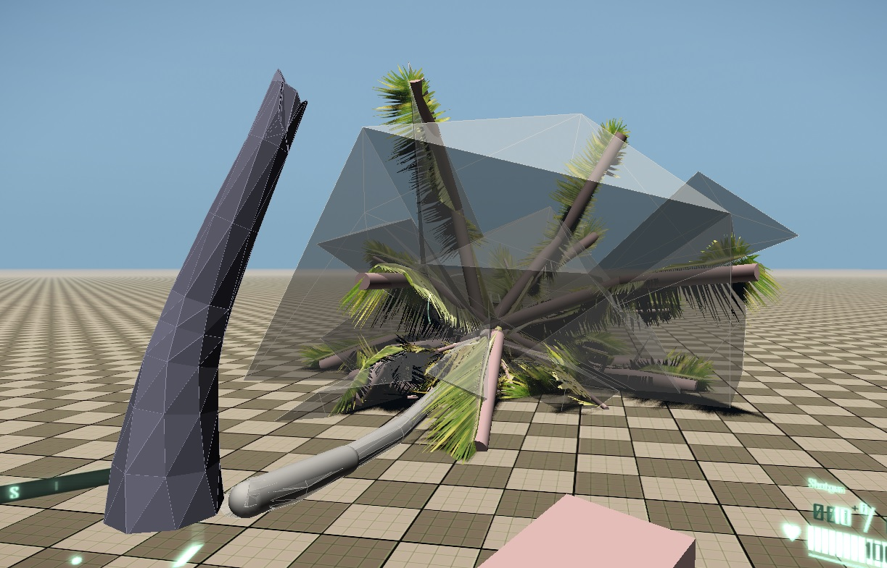
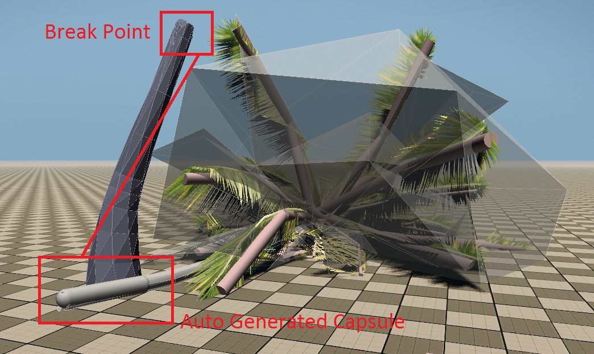

Overview
Boolean-breakable trees technology is a dynamic procedural breaking method that allows you to break trees precisely at the impact point. It subtracts a Boolean cut mesh from the main mesh (both render and physics) at the impact point.
This separates the tree parts that are cut as a result (the cut shape is generally expected to be large enough to be able to cut through the trunk in a single operation). Non-breakable tree pieces, like patches of foliage, are then assigned to the broken parts and have their touch-bending activated if they have it set up.

Pic01: Boolean breakage in action (with p_draw_helpers = 1 active)
Boolean Cutter Geometry
The boolean cutter meshes are defined within the physics.lua file found in:
<Your_Project>\Scripts\physics.lua
Within this file you define the geometry and params on how you want the cut to happen when requested by the system.
Surface Types
Boolean breakability is activated via surface type scripts and can be applied to any physicalized object that has a Boolean-friendly physicalized render mesh (i.e. its physics proxy is also the render mesh).
Example surface type (mat_wood_breakable), with boolean breakage params active:
<Your_Project>\Libs\MaterialEffects\Surfacetype.xml
<SurfaceType name="mat_wood_breakable" type="wood">
<Physics friction="0.5" elasticity="0.05" breakable_id="2" pierceability="7" break_energy="7000" hole_size="1.4" hit_points="10" hit_radius="0.4" hit_maxdmg="10" can_shatter="1" sound_obstruction="0.5" />
<BreakageParticles type="joint_break" effect="breakable_objects.tree_break.small" />
<BreakageParticles type="joint_shatter" effect="breakable_objects.tree_break.small" />
<BreakageParticles type="destroy" effect="breakable_objects.tree_break.small" count_per_unit="1" count_scale="1" scale="1" />
<AI fImpactRadius="2.5" fImpactSoundRadius="30" fFootStepRadius="20" proneMult="0.2" crouchMult="0.5" movingMult="2.5" />
</SurfaceType>Vegetation
Trees, however, can do some additional processing, such as
- Attach non-breakable foliage parts to broken trunk pieces.

- Vegetation 05 Trees (Breakable) 3dsMax
- Vegetation 05 Trees (Breakable) Maya
- Vegetation 05 Trees (Breakable) CRYENGINE
Pic02: Upper foliage (palm fronds) with touch bending still attached to the broken trunk piece.
- Make a (usually successful) attempt to generate a set of capsule physics proxies for the broken trunk parts. This is mainly a performance optimization, and the mesh proxy is also kept, for ray tracing and possible subsequent breaks.

Pic03: Auto generated capsule at the end of the broken trunk part.
- Cache broken models and reuse them if the newly requested cut is within g_tree_cut_reuse_dist distance from the stored one.
- Boolean breakability supports hit points, i.e. it’s possible to track the number and the strengths of hits within an area, and only request a break once the hit points drop to 0.
Tutorials
Depending on the DCC tool used - the links below show you how to setup vegetation assets for breaking.